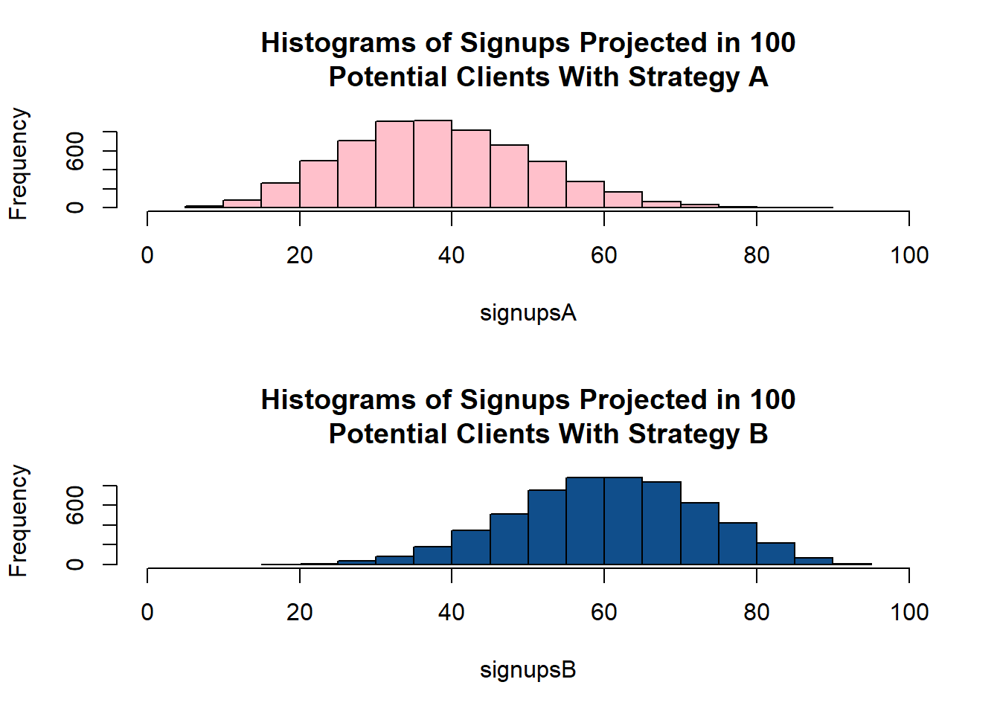

Capítulo 7 Bayesian Statistics
7.1 Math for understanding the Bayesian approach
\[P(A_k|B)=\frac{P(A_k\cap B)}{P(B)}\]
\[P(B|A_k)=\frac{P(B\cap A_k)}{P(A_k)} \therefore P(A_k|B)=\frac{}{}\]
7.1.1 Ejercicio
Morgan asks Smith to pick a number between 20 and 50, Smith tells Morgan a characteristic of the number he picked (it is a multiple of 5). With this information, determine the probability of Smith’s pick being also a multiple of 3 using ven diagrams and conditional probability.
Población total de 1000, una enfermedad se presenta en la población con prevalencia del 10%. Para poder
7.2 Conceptos sueltos que debo cubrir
- Tamaño Muestral Equivalente.
- Ajuste de Laplace.
- Laplace sugiere sumar un 1 (\(\frac{n_1+1}{n_1+n_0+2}\))
\[\frac{n_1+\alpha}{n_1+n_0+(\alpha + \beta)}\]
- Redes bayesianas, escribir sobre ésto.
\[p(p|D) \sim \beta (\alpha + n_1, \beta +n_0)\]
\[p(p) \sim \beta(\alpha, \beta)\]
- Regresión Bayesiana.
7.3 Entropy and Information Gain
7.3.1 Key definitios
Formula for Entropy
\[H(x) = -\sum_{i=1}^{n}P(x_i)*log_2P(x_i)\]
Information Gain tells us how important a given attribute of the feature vectors is for predicting that characteristic. Mathematically it is expressed as follows:
\[Gain(x,y) = H(x)-\sum_{v\in Values(A_i)}P(A_i=v)H(S_v)\]
7.3.2 Examples
7.3.2.1 Example 1
#Creating matrix
test<-matrix(c(346,74,124,26,470,100), nrow = 3, ncol = 2, byrow = TRUE)
colnames(test) <- c("count", "%")
rownames(test) <- c("Yes", "No", "Overall")
test## count %
## Yes 346 74
## No 124 26
## Overall 470 100Following the formula for entropy shown in the previous section we can obtain the entropy value for this dataset:
\[H(dataset) = -[\{P(yes)*log_2P(yes)+P(no)*log_2P(no)\}] = [(0.74*log_2(0.74))+(0.26*log_2(0.26))]\]
This operation gives the following result:
#Entropy for the node
H <- -((0.74*log(0.74, base = 2))+(0.26*log(0.26, base = 2)))
H## [1] 0.8267464We can, therefore, conclude that the entropy in this node is 0.827
7.3.2.2 Example 2. Usig Entropy and Information Gain to classify
We will use a very simple dataset:
test2 <- matrix(c(1,1,1,"I",1,1,0,"I",0,0,1,"II",1,0,0,"II"), ncol = 4, nrow = 4, byrow = TRUE)
colnames(test2) <- c("X", "Y", "Z", "Class")
test2 <- as.data.frame(test2)
test2## X Y Z Class
## 1 1 1 1 I
## 2 1 1 0 I
## 3 0 0 1 II
## 4 1 0 0 IIThe challenge is presented to use only one attribute to predict which Class each value belongs to. The approximation is done following these steps:
- Calculate entropy values for each attribute.
- Calculate information gain.
- Select the attribute with higher information gain result.
X1 <- table(test2$X == 1)
X0 <- table(test2$X == 0)
data.frame(X1, X0)## Var1 Freq Var1.1 Freq.1
## 1 FALSE 1 FALSE 3
## 2 TRUE 3 TRUE 1Step 1
- Entropy for attribute
X
\[H(X_1) = -\left[ \frac{2}{3}*log_2\frac{2}{3} + \frac{1}{3}*log_2\frac{1}{3} \right] = 0.9183 \]
#X1 <- -((2/3*log(2/3, base = 2))+(1/3*log(1/3, base = 2)))
#X0 <- -((1/1*log(1/1, base = 2)))
#Hx <- - Information Gain for attribute
X
\[I = 1-P(Y=1)*H(Y=1)-P(X=0)*H(X=0)=1-\left( \frac{3}{4}*0.9183\right)-\left(\frac{1}{4}*0\right)=1-0.688725-0\] \[= \boldsymbol{0.311275}\]
Step 2
- Entropy for attribute
Y
\[H(X_1) = -\left[ \frac{2}{2}*log_2\frac{2}{2} \right] = 0 \]
- Information Gain for attribute
Y
\[I = 1-P(Y=1)*H(Y=1)-P(Y=0)*H(Y=0)=1- 0-0= \boldsymbol{1}\]
Step 3
- Entropy for attribute
Z
\[H(Z_1) = -\left[ \frac{1}{2}*log_2\frac{1}{2}\right] = 0.5 \]
- Information Gain for attribute
Z
\[I = 1-P(Z=1)*H(Z=1)-P(Z=0)*H(Z=0)=1- 0.5-0.5= \boldsymbol{0}\]
According to the results these are the corresponding information gain results for each attribute:
X: 0.311275Y: 1Z: 0
We can then safely state that using attribute Y to predict the target variable Class is the best option based on information gain.
7.4 Bayesian Linear Regression
Before exploring the Bayesian approach to regressions, it is important to refresh our memory and review the traditional approach to regressions.
7.4.1 Linear Regression
For this we will use the example of the cereals data set (Data and Library, n.d.).
library(readr)
cereals <- read_delim("D:/Dropbox/MsC UABC/2o Semestre/Clases/Estadistica/estadistica-syllabus/datasets/cereals.csv",
"\t", escape_double = FALSE, trim_ws = TRUE)
str(cereals)## Classes 'tbl_df', 'tbl' and 'data.frame': 77 obs. of 16 variables:
## $ name : chr "100%_Bran" "100%_Natural_Bran" "All-Bran" "All-Bran_with_Extra_Fiber" ...
## $ mfr : chr "N" "Q" "K" "K" ...
## $ type : chr "C" "C" "C" "C" ...
## $ calories: int 70 120 70 50 110 110 110 130 90 90 ...
## $ protein : int 4 3 4 4 2 2 2 3 2 3 ...
## $ fat : int 1 5 1 0 2 2 0 2 1 0 ...
## $ sodium : int 130 15 260 140 200 180 125 210 200 210 ...
## $ fiber : num 10 2 9 14 1 1.5 1 2 4 5 ...
## $ carbo : num 5 8 7 8 14 10.5 11 18 15 13 ...
## $ sugars : int 6 8 5 0 8 10 14 8 6 5 ...
## $ potass : int 280 135 320 330 -1 70 30 100 125 190 ...
## $ vitamins: int 25 0 25 25 25 25 25 25 25 25 ...
## $ shelf : int 3 3 3 3 3 1 2 3 1 3 ...
## $ weight : num 1 1 1 1 1 1 1 1.33 1 1 ...
## $ cups : num 0.33 1 0.33 0.5 0.75 0.75 1 0.75 0.67 0.67 ...
## $ rating : num 68.4 34 59.4 93.7 34.4 ...
## - attr(*, "spec")=List of 2
## ..$ cols :List of 16
## .. ..$ name : list()
## .. .. ..- attr(*, "class")= chr "collector_character" "collector"
## .. ..$ mfr : list()
## .. .. ..- attr(*, "class")= chr "collector_character" "collector"
## .. ..$ type : list()
## .. .. ..- attr(*, "class")= chr "collector_character" "collector"
## .. ..$ calories: list()
## .. .. ..- attr(*, "class")= chr "collector_integer" "collector"
## .. ..$ protein : list()
## .. .. ..- attr(*, "class")= chr "collector_integer" "collector"
## .. ..$ fat : list()
## .. .. ..- attr(*, "class")= chr "collector_integer" "collector"
## .. ..$ sodium : list()
## .. .. ..- attr(*, "class")= chr "collector_integer" "collector"
## .. ..$ fiber : list()
## .. .. ..- attr(*, "class")= chr "collector_double" "collector"
## .. ..$ carbo : list()
## .. .. ..- attr(*, "class")= chr "collector_double" "collector"
## .. ..$ sugars : list()
## .. .. ..- attr(*, "class")= chr "collector_integer" "collector"
## .. ..$ potass : list()
## .. .. ..- attr(*, "class")= chr "collector_integer" "collector"
## .. ..$ vitamins: list()
## .. .. ..- attr(*, "class")= chr "collector_integer" "collector"
## .. ..$ shelf : list()
## .. .. ..- attr(*, "class")= chr "collector_integer" "collector"
## .. ..$ weight : list()
## .. .. ..- attr(*, "class")= chr "collector_double" "collector"
## .. ..$ cups : list()
## .. .. ..- attr(*, "class")= chr "collector_double" "collector"
## .. ..$ rating : list()
## .. .. ..- attr(*, "class")= chr "collector_double" "collector"
## ..$ default: list()
## .. ..- attr(*, "class")= chr "collector_guess" "collector"
## ..- attr(*, "class")= chr "col_spec"7.4.1.1 Data Preparation
As we can see, this dataset needs som data preparation before a linear regression model can be generated.
#Converting to numeric data those variables that need to be read as such>
cereals$calories <- as.numeric(cereals$calories)
cereals$protein <- as.numeric(cereals$protein)
cereals$fat <- as.numeric(cereals$fat)
cereals$sodium <- as.numeric(cereals$sodium)
cereals$fiber <- as.numeric(cereals$fiber)
cereals$carbo <- as.numeric(cereals$carbo)
cereals$sugars <- as.numeric(cereals$sugars)
cereals$potass <- as.numeric(cereals$potass)
cereals$vitamins <- as.character(cereals$vitamins)
cereals$weight <- as.numeric(cereals$weight)
cereals$cups <- as.numeric(cereals$cups)
cereals$rating <- as.numeric(cereals$rating)
str(cereals)## Classes 'tbl_df', 'tbl' and 'data.frame': 77 obs. of 16 variables:
## $ name : chr "100%_Bran" "100%_Natural_Bran" "All-Bran" "All-Bran_with_Extra_Fiber" ...
## $ mfr : chr "N" "Q" "K" "K" ...
## $ type : chr "C" "C" "C" "C" ...
## $ calories: num 70 120 70 50 110 110 110 130 90 90 ...
## $ protein : num 4 3 4 4 2 2 2 3 2 3 ...
## $ fat : num 1 5 1 0 2 2 0 2 1 0 ...
## $ sodium : num 130 15 260 140 200 180 125 210 200 210 ...
## $ fiber : num 10 2 9 14 1 1.5 1 2 4 5 ...
## $ carbo : num 5 8 7 8 14 10.5 11 18 15 13 ...
## $ sugars : num 6 8 5 0 8 10 14 8 6 5 ...
## $ potass : num 280 135 320 330 -1 70 30 100 125 190 ...
## $ vitamins: chr "25" "0" "25" "25" ...
## $ shelf : int 3 3 3 3 3 1 2 3 1 3 ...
## $ weight : num 1 1 1 1 1 1 1 1.33 1 1 ...
## $ cups : num 0.33 1 0.33 0.5 0.75 0.75 1 0.75 0.67 0.67 ...
## $ rating : num 68.4 34 59.4 93.7 34.4 ...
## - attr(*, "spec")=List of 2
## ..$ cols :List of 16
## .. ..$ name : list()
## .. .. ..- attr(*, "class")= chr "collector_character" "collector"
## .. ..$ mfr : list()
## .. .. ..- attr(*, "class")= chr "collector_character" "collector"
## .. ..$ type : list()
## .. .. ..- attr(*, "class")= chr "collector_character" "collector"
## .. ..$ calories: list()
## .. .. ..- attr(*, "class")= chr "collector_integer" "collector"
## .. ..$ protein : list()
## .. .. ..- attr(*, "class")= chr "collector_integer" "collector"
## .. ..$ fat : list()
## .. .. ..- attr(*, "class")= chr "collector_integer" "collector"
## .. ..$ sodium : list()
## .. .. ..- attr(*, "class")= chr "collector_integer" "collector"
## .. ..$ fiber : list()
## .. .. ..- attr(*, "class")= chr "collector_double" "collector"
## .. ..$ carbo : list()
## .. .. ..- attr(*, "class")= chr "collector_double" "collector"
## .. ..$ sugars : list()
## .. .. ..- attr(*, "class")= chr "collector_integer" "collector"
## .. ..$ potass : list()
## .. .. ..- attr(*, "class")= chr "collector_integer" "collector"
## .. ..$ vitamins: list()
## .. .. ..- attr(*, "class")= chr "collector_integer" "collector"
## .. ..$ shelf : list()
## .. .. ..- attr(*, "class")= chr "collector_integer" "collector"
## .. ..$ weight : list()
## .. .. ..- attr(*, "class")= chr "collector_double" "collector"
## .. ..$ cups : list()
## .. .. ..- attr(*, "class")= chr "collector_double" "collector"
## .. ..$ rating : list()
## .. .. ..- attr(*, "class")= chr "collector_double" "collector"
## ..$ default: list()
## .. ..- attr(*, "class")= chr "collector_guess" "collector"
## ..- attr(*, "class")= chr "col_spec"7.4.1.2 Data Quality Report for Categorical Variables
setwd("D:/Dropbox/MsC UABC/2o Semestre/Clases/Estadistica/estadistica-syllabus")
source('QOfCategoricalF.R')
DQRcat <- QOfCategoricalF(cereals[,c(1,2,3,12,13)])
DQRcat## Count Miss Card Mode ModeFrec ModePerc Mode2
## name 77 0 77 100%_Bran 1 1.3% 100%_Natural_Bran
## mfr 77 0 7 K 23 29.87% G
## type 77 0 2 C 74 96.1% H
## vitamins 77 0 3 25 63 81.82% 0
## shelf 77 0 3 3 36 46.75% 2
## Mode2Frec Mode2Perc
## name 1 1.3%
## mfr 22 28.57%
## type 3 3.9%
## vitamins 8 10.39%
## shelf 21 27.27%7.4.1.3 Data Quality Report for Continuous Variables
source('QOfContinuousF.R')
DQRcont <- QOfContinuousF(cereals[,c(4:11, 14:16)])
DQRcont## Count Miss Card Min Qrt1 Median Qrt3 Max Mean
## calories 77 0 11 50.00000 100.00 110.00 110.00 160.00000 106.88
## protein 77 0 6 1.00000 2.00 3.00 3.00 6.00000 2.55
## fat 77 0 5 0.00000 0.00 1.00 2.00 5.00000 1.01
## sodium 77 0 27 0.00000 130.00 180.00 210.00 320.00000 159.68
## fiber 77 0 13 0.00000 1.00 2.00 3.00 14.00000 2.15
## carbo 77 0 22 -1.00000 12.00 14.00 17.00 23.00000 14.60
## sugars 77 0 17 -1.00000 3.00 7.00 11.00 15.00000 6.92
## potass 77 0 36 -1.00000 40.00 90.00 120.00 330.00000 96.08
## weight 77 0 7 0.50000 1.00 1.00 1.00 1.50000 1.03
## cups 77 0 12 0.25000 0.67 0.75 1.00 1.50000 0.82
## rating 77 0 77 18.04285 33.17 40.40 50.83 93.70491 42.67
## Sdev
## calories 19.48
## protein 1.09
## fat 1.01
## sodium 83.83
## fiber 2.38
## carbo 4.28
## sugars 4.44
## potass 71.29
## weight 0.15
## cups 0.23
## rating 14.057.4.2 Logistic Regression
7.4.2.1 Splitting train and test dataset
#Spliting inot trainning and test datasets
library(caTools)
set.seed(123)
split = sample.split(cereals$rating, SplitRatio = 2/3)
training_set = subset(cereals, split == TRUE)
test_set = subset(cereals, split == FALSE)
# Feature Scaling
#training_set[, c(4:11,14:16)] = scale(training_set[, c(4:11,14:16)])
# test_set[, 2:3] = scale(test_set[, 2:3])7.4.2.2 Fitting SLR to training set
regressor <- lm(formula = rating ~ sugars,
data = cereals)
summary(regressor)##
## Call:
## lm(formula = rating ~ sugars, data = cereals)
##
## Residuals:
## Min 1Q Median 3Q Max
## -17.853 -5.677 -1.439 5.160 34.421
##
## Coefficients:
## Estimate Std. Error t value Pr(>|t|)
## (Intercept) 59.2844 1.9485 30.43 < 2e-16 ***
## sugars -2.4008 0.2373 -10.12 1.15e-15 ***
## ---
## Signif. codes: 0 '***' 0.001 '**' 0.01 '*' 0.05 '.' 0.1 ' ' 1
##
## Residual standard error: 9.196 on 75 degrees of freedom
## Multiple R-squared: 0.5771, Adjusted R-squared: 0.5715
## F-statistic: 102.3 on 1 and 75 DF, p-value: 1.153e-157.4.2.3 Visualizing SLR on the copmlete cereals dataset
library(ggplot2)
ggplot() +
geom_point(aes(x = cereals$sugars, y = cereals$rating),
colour = "red") +
geom_line(aes(x = cereals$sugars, y = predict(regressor, newdata = cereals)),
colour = "blue") +
ggtitle("Sugar vs Prediction of Rating variables") +
theme(plot.title = element_text(hjust = 0.5)) +
xlab("Amount of Sugars") +
ylab("Raiting")7.5 Examples of Bayesian models
Taken from Rasmus Bååth´s blog.
7.5.1 Bayesian A testing for Swedish Fish Incorporated
Swedish Fish Incorporated is the largest Swedish company delivering fish by mail order. They are now trying to get into the lucrative Danish market by selling one year Salmon subscriptions. The marketing department have done a pilot study and tried the following marketing method:
A: Sending a mail with a colorful brochure that invites people to sign up for a one year salmon subscription.
The marketing department sent out 16 mails of type A. Six Danes that received a mail signed up for one year of salmon and marketing now wants to know, how good is method A?
7.5.1.1 Question I: Build a Bayesian model that answers the question: What would the rate of sign-up be if method A was used on a larger number of people?
Hint 1: The answer is not a single number but a distribution over probable rates of sign-up.
Hint 2: As part of you generative model you’ll want to use the binomial distribution, which you can sample from in R using the rbinom(n, size, prob). The binomial distribution simulates the following process n times: The number of “successes” when performing size trials, where the probability of “success” is prob.
Hint 3: A commonly used prior for the unknown probability of success in a binomial distribution is a uniform distribution from 0 to 1. You can draw from this distribution by running runif(1, min = 0, max = 1)
Hint 4: Here is a code scaffold that you can build upon.
- First of all we need to declare the amount of draws our model will make and the prior distribution.
# Number of random draws from the prior
set.seed(123)
n_draw <- 100000
prior <- runif(n_draw,0,1) # Here you sample n_draws draws from the prior
hist(prior,
col = "pink",
main = "Hisogram of Prior Distribution for Strategy A") # It's always good to eyeball the prior to make sure it looks ok.- Once this is finished we declare a generative model and simulate data with the parameters from the priors and the model.
# Here you define the generative model
generative_model <- function(rate) {
subscribers <- rbinom(1, size = 16, prob = rate)
subscribers
}
# Here you simulate data using the parameters from the prior and the
# generative model
subscribers <- rep(NA, n_draw)
for(i in 1:n_draw) {
subscribers[i] <- generative_model(prior[i])
}- Next we work on filtering the draws that mached the data and generate a histogram of it, this will be the visualization of the Posterior Distribution.
# Here you filter off all draws that do not match the data.
posteriorA <- prior[subscribers == 6]
hist(posteriorA,
col = "coral2") # Eyeball the posteriorlength(posteriorA) # See that we got enought draws left after the filtering.## [1] 5897# There are no rules here, but you probably want to aim
# for >1000 draws.
# Now you can summarize the posterior, where a common summary is to take the mean
# or the median posterior, and perhaps a 95% quantile interval.
summary(posteriorA)## Min. 1st Qu. Median Mean 3rd Qu. Max.
## 0.06941 0.30650 0.38480 0.38860 0.46120 0.83220As we can see from the previous calculations, if strategy A was used in a larger population we could expect a sign up rate from 20% to 60%, this result shows a considerable amount of uncertanty.
7.5.1.2 Question II: What’s the probability that method A is better than telemarketing?
So marketing just told us that the rate of sign-up would be 20% if salmon subscribers were snared by a telemarketing campaign instead (to us it’s very unclear where marketing got this very precise number from). So given the model and the data that we developed in the last question, what’s the probability that method A has a higher rate of sign-up than telemarketing?
Hint 1: If you have a vector of samples representing a probability distribution, which you should have from the last question, calculating the amount of probability above a certain value is done by simply counting the number of samples above that value and dividing by the total number of samples.
Hint 2: The answer to this question is a one-liner.
sum(posteriorA > 0.2)/length(posteriorA)## [1] 0.9659149As we can see, it is more likely that strategy A will produce higher sign up rattings than telemarketing.
7.5.1.3 Question III: If method A was used on 100 people what would be the number of sign-ups?
Hint 1: The answer is again not a single number but a distribution over probable numbers of sign-ups.
Hint 2: As before, the binomial distribution is a good candidate for how many people that sign up out of the 100 possible.
Hint 3: Make sure you don’t “throw away” uncertainty, for example by using a summary of the posterior distribution calculated in the first question. Use the full original posterior sample!
Hint 4: The general patter when calculating “derivatives” of posterior samples is to go through the values one-by-one, and perform a transformation (say, plugging in the value in a binomial distribution), and collect the new values in a vector.
# But since rbinom is vectorized we can simply write it like this:
signupsA <- rbinom(n = length(posteriorA), size = 100, prob = posteriorA)
hist(signupsA, xlim = c(0, 100),
col = "pink",
main = "Histograms of Signups Projected in 100
Potential Clients With Strategy A")The probable number of signups if strategy A were to be used is between 20 and 60.
7.5.2 Calculating probabilies for a new marketing idea.
The CEO of Swedish Fish Incorporated came with the “greatest idea” for marketing: along with the colorful brochure he wants to send a frozen salmon to the potential costumers. He has learned on or two things from marketing and had his idea already tested with 16 danes, out of these 10 sigend up for the service. What’s the probability of this strategy to generate signups in a larger population?
- First we need to generate the analysis for the new strategy:
- A prior distribution to start from, we’ll go with a uniform distribution:
n_draw <- 100000
prior <- runif(n_draw,0,1) # Here you sample n_draws draws from the prior
hist(prior,
col = "dodgerblue",
main = "Hisogram of Prior Distribution for Strategy B") # It's always good to eyeball the prior to make sure it looks ok.- The regenerative model and all the calculations will be done the same as strategy A, but instead of selecting those who resulted in 6, we will select those draws who resulted in 10.## $breaks
## [1] 0.20 0.25 0.30 0.35 0.40 0.45 0.50 0.55 0.60 0.65 0.70 0.75 0.80 0.85
## [15] 0.90 0.95
##
## $counts
## [1] 1 25 67 143 299 483 727 920 1000 882 681 407 185 48
## [15] 3
##
## $density
## [1] 0.003406575 0.085164367 0.228240504 0.487140181 1.018565832
## [6] 1.645375575 2.476579799 3.134048714 3.406574689 3.004598876
## [11] 2.319877363 1.386475898 0.630216317 0.163515585 0.010219724
##
## $mids
## [1] 0.225 0.275 0.325 0.375 0.425 0.475 0.525 0.575 0.625 0.675 0.725
## [12] 0.775 0.825 0.875 0.925
##
## $xname
## [1] "posteriorB"
##
## $equidist
## [1] TRUE
##
## attr(,"class")
## [1] "histogram"## [1] 5871## Min. 1st Qu. Median Mean 3rd Qu. Max.
## 0.2237 0.5323 0.6127 0.6091 0.6913 0.9103- It is time to compare these two aproximations:
par(mfrow = c(2,1))
hist(signupsA, xlim = c(0, 100),
col = "pink",
main = "Histograms of Signups Projected in 100
Potential Clients With Strategy A")
hist(signupsB, xlim = c(0, 100),
col = "dodgerblue4",
main = "Histograms of Signups Projected in 100
Potential Clients With Strategy B")
- It appears that Strategy B is more likely to yield higher signups. In order to check if it is so we will generate a table of rate differences:
Where the variable rate_diff is calculated as follows, since we are interested in variable B:
\[rate\_diff = \text{rateB}-\text{rateA}\]
The next table is a representation of the first values obtained:
## PostA PostB rate_diff
## 1 0.4145463 0.4686832 0.05413691
## 2 0.2659726 0.6099820 0.34400938
## 3 0.4348927 0.6927303 0.25783757
## 4 0.3694889 0.6500233 0.28053442
## 5 0.4394315 0.4623911 0.02295960
## 6 0.3117022 0.7195024 0.40780021A histogram of the values recorded in rate_diff is usefull to visualize the probability of strategy B yelding more signups than strategy A.
It becomes obvious that the greater part of the probability is beyond 0, meaning that strategy B is more likely to bring mor signups to the company. If the CEO wanted to know how much likely the probability of strategy B is to be sucessful (more signups) than strategy A, this could be computated as well with the followin lines of code:
sum((rate$rate_diff > 0)/length(rate$rate_diff))## [1] 0.9143246Strategy B is 91.4% more likely to bring more signups than strategy A.